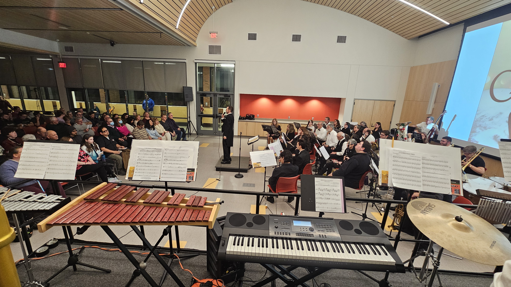

About Us
Founded in 2006, the Augusta Curtis Concert Band is a community band filled with members ranging in age from early teens through their golden years. The band rehearses every Monday from 7:00 to 9:00 pm in the lower level of the Augusta Curtis Cultural Center. Anyone interested in playing with the band is welcome to join the fun on Monday evenings!
For more information, contact our director JC Caillouette at theaccb@gmail.com

Our History
- In the wake of Meriden Symphony Orchestra's 1993 disbandment, there was left a deep want for musical comraderie in the city of Meriden. There were no other community ensembles to join.
- Small business owner and former school music teacher JC Caillouette joins forces with school musical teacher and retired member of the President's Own Earl Cote to form a community band in Spring 2006. The Augusta Curtis Concert Band is born, named for the building which they rehearsed and gave concerts in.
- In 2010, the Augusta Curtis Concert Band was well on its way to community popularity. That spring, they performed at the Meriden Daffodil Festival , and by wintertime they were performing their holiday concert in the Toyota Oakdale Theatre.
- The Augusta Curtis Concert Band holds their spring concert at the Hubbard Park Bandshell on June 24, 2012.
- In 2016, frequent guest-conductor Andrew Maust is made co-director alongside JC Caillouette. Earl Cote now takes the post of associate conductor.
- Co-founder Earl Cote passes away on July 9, 2017. He is always fondly remembered.
- Andrew Maust co-directs his final season with the Augusta Curtis Concert Band in the spring of 2019. The band thanks him for his generous service
- In winter 2019, JC Caillouette welcomes three new guest conductors to the podium: Jeff Howey, Michael Roche, and Philomena Nesci
- As COVID-19 surges, the band takes a hiatus from 2020 to spring of 2022. When they return in the winter of 2022 for their holiday concert, they are greeted by an audience of 200 packed into the Augusta Curtis Cultural Center, with no sitting room to spare! That night, they are offered a new and larger performance venue at the recently rennovated Meriden Public Library.
- During the chaos of the pandemic, the Augusta Curtis Cultural Center had gone bankrupt and switched hands from its old non-profit to the YMCA, and finally to the City of Meriden. Kindly, the city allowed the band to continue rehearsing in the historic building.
- In order to continue providing free entertainment to the growing community for generations to come, the band knew they had to fundraise. JC Caillouette and Philomena Nesci pursue legal advise from UConn Law Clinic in order to help the band become a non-profit organization of their own.
- Just in time for the 2023 spring concert, the Augusta Curtis Concert Band achieves legal non-profit status. Philomena Nesci is promoted to Assisant Conductor. Michael Roche and Jeff Howey are promoted to associate conductors. The first elected board of the Augusta Curtis Concert Band consisted of JC Caillouette as President, Kelly Webster as Vice President, Philomena Nesci as Secretary, Alanna Neville as Treasurer, Michael Roche as Recruitment Director, Kelsey Lines-Natale as Media/Marketing Director, Anthony Neville as Equipment Director, and Jeff Howey and Christina Bernhardt as At-Large Members.
- In spring 2025, the Augusta Curtis Concert Band welcomes Meriden-born-and-bred composer Anthony Susi as a guest conductor.
- In winter 2025, the Augusta Curtis Concert Band premieres the band arrangement of "Joyous Sleighride" by Anthony Susi. The band's performance of the piece is the featured recording listed on J.W. Pepper, and when added to the listing, instantly elevated the work to Editor's Choice!
- The upcoming concert on June 17, 2026, celebrates the Augusta Curtis Concert Band's 20th Anniversary!